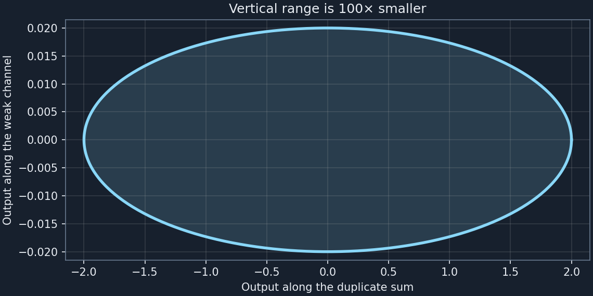

Chapter 19 · Lectures 74–77
Singular value decomposition
A calibration array can hide a direction even when each coordinate separately appears in a reading. It can also detect a direction so weakly that a small sensor error dominates the signal. Singular values distinguish these cases by measuring gains between orthonormal input and output coordinates.
In an original four-channel model, the first two sensors duplicate a sum, a third reads a weak actuator, and the fourth has no modeled response. Let \(x=(x_1,x_2,x_3)^T\) be the real, dimensionless command, and write \(Ax\) for its output. For \(0<\varepsilon<1\) the response matrix is
Rectangular maps have directional gains (L74 01:03)
For this section take a general \(A\in\mathbb C^{m\times n}\) with positive dimensions, and use \(A^*\) for the adjoint. The Euclidean norm is \(\|x\|_2=\sqrt{x^*x}\). Define the singular values \(\sigma_1\geq\cdots\geq\sigma_p\geq0\), where \(p=\min(m,n)\), as the square roots of the \(p\) largest eigenvalues of \(A^*A\), counting multiplicity. If \(n>m\), the extra \(n-m\) eigenvalues are zero because the rank of \(A^*A\) is at most \(m\). The eigenvalues are real and nonnegative because \(A^*A\) is Hermitian and \(x^*A^*Ax=\|Ax\|_2^2\geq0\).
In the calibration array, the first two columns agree, so the difference direction \((1,-1,0)^T/\sqrt{2}\) has zero gain. The unit sum direction \((1,1,0)^T/\sqrt2\) has gain \(2\). The unit third-coordinate direction has gain \(\varepsilon\). The respective images are either zero or orthogonal. Direct multiplication gives the same conclusion: the top-left \(2\)-by-\(2\) block of \(A^*A\) has every entry equal to \(2\), so its eigenvalues are \(4\) and \(0\), and the remaining eigenvalue is \(\varepsilon^2\).
Two independent changes of coordinates (L75 00:31)
The singular value decomposition is \(A=U\Sigma V^*\) with unitary \(U\) of order \(m\) and unitary \(V\) of order \(n\). A unitary matrix has orthonormal columns and inverse equal to its adjoint. The rectangular \(m\)-by-\(n\) matrix \(\Sigma\) has \(\sigma_j\) in diagonal positions \(j\leq p\) and zeros elsewhere. The two coordinate systems may have different dimensions.
One construction uses the Hermitian spectral theorem from Chapter 12. Choose an orthonormal eigenbasis \(v_1,\dots,v_n\) of \(A^*A\) ordered by decreasing eigenvalue. For every \(\sigma_j>0\) set \(u_j=Av_j/\sigma_j\). Then
For positive singular values this equals one when \(i=j\) and zero otherwise. If \(A^*Av_j=0\), then the squared norm of \(Av_j\) vanishes, so \(Av_j=0\). Complete the nonzero-image vectors \(u_j\) to an orthonormal basis of the output space, for example by Gram–Schmidt. The matrices \(U\) and \(V\) with these ordered columns satisfy \(AV=U\Sigma\) column by column. Multiplication by \(V^*\) gives the factorization, including the case \(A=0\).
The construction proves existence. A numerical SVD typically works from the entries of \(A\) directly by unitary reduction to bidiagonal form, followed by the SVD of the smaller banded problem. This avoids explicitly forming the Gram matrix \(A^*A\), where the ratio of the largest to smallest positive eigenvalues is the square of the corresponding singular-value ratio. LAPACK Users’ Guide, Singular Value Decomposition
The partition reveals four subspaces (L76 02:00)
Let \(r\) be the number of strictly positive singular values. Write \(U=(U_1\ U_2)\) and \(V=(V_1\ V_2)\), with \(r\) columns in each leading block. Set \(D=\operatorname{diag}(\sigma_1,\dots,\sigma_r)\). The compact decomposition is \(A=U_1DV_1^*\). The product sends each \(v_j\) in \(V_1\) to \(\sigma_ju_j\), which spans the range as \(j\) varies. Vectors in \(V_2\) go to zero. The adjoint factorization swaps the roles of \(U\) and \(V\). In particular \(A^*u_j=\sigma_jv_j\) for every positive gain, so \(AA^*u_j=\sigma_j^2u_j\) and \(AA^*\) vanishes on the span of \(U_2\). Together these observations prove that \(r=\operatorname{rank}A\) and identify four orthonormal bases.
| Space | Basis columns | Calibration meaning |
|---|---|---|
| \(\mathcal R(A)\) | \(U_1\) | Output sum and weak reading |
| \(\ker A^*\) | \(U_2\) | Disagreement between duplicate readings and the fourth channel |
| \(\mathcal R(A^*)\) | \(V_1\) | Input sum and weak actuator |
| \(\ker A\) | \(V_2\) | Invisible change in input contrast |
For any prescribed output \(b\), the equation \(Ax=b\) becomes \(\Sigma V^*x=U^*b\). Thus an exact solution exists precisely when \(U_2^*b=0\). In that case every solution has the form \(V_1 D^{-1}U_1^*b+V_2z\), with \(z\) arbitrary. Every solution has the same observable part. The hidden component alters the command without affecting any predicted reading.
Gains, conditioning, and discarding a direction (L77 05:00)
For a vector \(x\), set \(c=V^*x\). Unitary matrices preserve lengths, so
The induced Euclidean norm \(\|A\|_2=\max_{\|x\|_2=1}\|Ax\|_2\) is therefore \(\sigma_1\), attained at \(v_1\). For square invertible \(A\), the inverse has singular values given by the reciprocals in reverse order, so the condition number \(\|A\|_2\|A^{-1}\|_2\) is \(\sigma_1/\sigma_n\). For the rectangular calibration array the inverse is defined only between the observable input and attainable output spaces. On those spaces the ratio is \(2/\varepsilon\), and unit error in the weak reading produces an error of \(1/\varepsilon\) in the inferred actuator.
The same coordinates describe output geometry. On the observable input subspace the unit sphere maps to an ellipsoid surface whose semiaxes have lengths \(\sigma_j\). If the kernel is nonzero, the image of the full unit sphere fills that ellipsoid, since adding a kernel component can increase the input length to one without changing the output. If \(r=0\), the image consists of zero.

For a lower-rank approximation, let \(A_k=\sum_{j=1}^k\sigma_j u_jv_j^*\) with \(0\leq k<r\). The singular values of the omitted terms show that \(\|A-A_k\|_2=\sigma_{k+1}\). Every matrix \(B\) of rank at most \(k\) vanishes on some unit vector in the span of the first \(k+1\) right singular vectors, since the restriction to that subspace has rank at most \(k\). For this vector \(\|(A-B)x\|_2=\|Ax\|_2\geq \sigma_{k+1}\). The truncated SVD is therefore optimal in induced Euclidean norm. In the calibration array its best rank-one truncation has error \(\varepsilon\). A truncation changes the model's effective rank and intentionally suppresses a real response.
Laboratory
Run the SVD experiment with no input files. It uses \(\varepsilon=0.02\), checks reconstruction from the two positive singular terms and checks both null spaces, and prints two nonzero gains \(2\) and \(0.02\). It verifies rank-one error \(0.02\) and observable gain ratio \(100\). It compares subspaces by an orthogonal projection so that arbitrary basis signs and rotations do not change the check.
Exercises with solutions
Squaring gains
Problem. Find the singular values of the row \((3,4)\) and give a unit right singular vector for the nonzero value.
Solution. Its Gram matrix is the outer product of \((3,4)^T\) with itself. It acts on this vector by multiplication by \(3^2+4^2=25\) and vanishes on the orthogonal direction. There is one listed singular value because \(p=1\). Its value is \(5\), and one right singular vector is \((3,4)^T/5\).
Detect inconsistent data
Problem. Can the calibration array produce \(b=(1,2,0,0)^T\) exactly?
Solution. No. The unit output direction \((1,-1,0,0)^T/\sqrt2\) lies in \(\ker A^*\). Its inner product with \(b\) is \(-1/\sqrt2\) and its inner product with every \(Ax\) is zero.
Adjust the observable basis
Problem. If two positive singular values agree, explain how to rotate their right singular vectors while maintaining the SVD.
Solution. Let the two pairs be the columns of \(U_J,V_J\) with common value \(\sigma\). For any \(2\)-by-\(2\) unitary \(W\), replace them with \(U_JW,V_JW\). The contribution becomes \((U_JW)\sigma I_2(V_JW)^*=\sigma U_JWW^*V_J^*=\sigma U_JV_J^*\). Each rotated pair remains orthonormal.
Separate operator error from inverse error
Problem. Drop the weak singular direction from the calibration model. Compare the response error on \(x=(0,0,1)^T\) with the command error if the truncated model reconstructs a zero weak actuator.
Solution. The command has only the omitted direction, so the discarded output is \((0,0,\varepsilon,0)^T\) and has length \(\varepsilon\). Setting the reconstructed coordinate to zero changes the command by one. Small operator approximation error does not bound the error in an inverse solution along a weak direction.